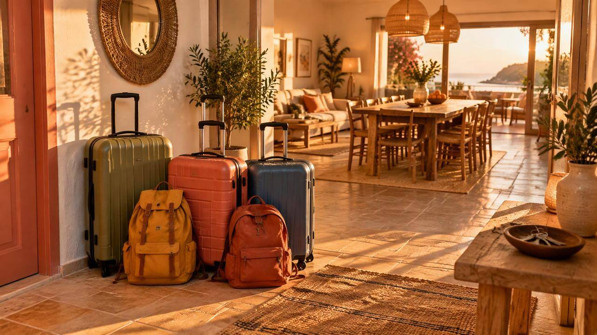

English version available: staymatch.pro/en
Kostenlose Erweiterung (Plugin) für Chrome, Edge und BraveDas passende Airbnb.
In 2 Minuten.
StayMatch bewertet jede Unterkunft auf deiner Suchseite nach Budget, ehrlichen Sternen, Betten und deinen Wünschen und zeigt sofort die drei besten mit Begründung.
📱 Das Plugin läuft in Chrome, Edge und Brave am Computer, nicht in der Airbnb-App. Merk dir die Seite für die Suche am Laptop.
- Kostenlos
- Open Source
- Ohne Anmeldung
- Kein Tracking
Oder direkt auf Airbnb suchen:
Öffnet die normale Airbnb-Suche in einem neuen Tab.
StayMatch · Top 3 für dich
Auf einen Blick
Top 3 statt 40 Tabs
Drei Kandidaten mit Begründung statt Dutzender offener Tabs.
Passend zu dir
Budget, Bewertungen und deine Wünsche zählen, auf Wunsch auch das Viertel.
Mit Begründung
Du siehst immer, warum eine Unterkunft oben steht, und was nicht passt.
Bleibt bei dir
Kein Konto, kein Tracking, keine StayMatch-Datenbank. Wünsche und Verlauf speichert dein Browser.
Von der Suche zur passenden Wohnung in drei Schritten.
Statt jede Wohnung einzeln anzuklicken, siehst du auf einen Blick, welche passt und warum.
Plugin installieren
Einmal in Chrome, Edge oder Brave einrichten, dauert etwa eine Minute. Kein Konto, keine Anmeldung.
Ganz normal suchen
Stadt und Datum auf Airbnb eingeben. Im StayMatch-Panel Budget pro Nacht und Wünsche wählen, etwa ganze Unterkunft oder Superhost.
Top 3 nehmen
Jede Karte bekommt einen Punktwert, die drei besten stehen oben mit Begründung. Du kennst die Stadt nicht? Der Viertel-Finder sucht vorher das Viertel, das zu dir passt.
Die Top 3 erscheinen von selbst.
Öffne eine beliebige Airbnb-Suche. Das Plugin setzt einen Punktwert an jede Karte und zeigt die drei besten mit Begründung. Die Top 3 gelten je Seite: Blätterst du weiter, bewertet es die dortigen Unterkünfte neu.
- ZIP herunterladen und entpacken. Auf dem Mac reicht ein Doppelklick.
- In Chrome
chrome://extensionsin die Adresszeile eingeben. - Oben rechts den Entwicklermodus einschalten.
- Entpackte Erweiterung laden und den entpackten Ordner wählen.
- Airbnb-Suche öffnen, im Panel Budget und Wünsche wählen. Fertig.
Alles, damit du schneller die richtige Unterkunft findest.
Für Städtetrips, Workations, Wochenenden und alle Reisen, bei denen du nicht stundenlang suchen willst.
Deine Wünsche
Ganze Unterkunft, kein gewerblicher Anbieter, Superhost oder Gäste-Favorit, genug Bewertungen. Was nicht passt, steht als Warnung dabei.
Bewertungen gelesen
Auf der Unterkunftsseite zieht StayMatch Stichworte aus den Rezensionen: sauber, Lage, laut, WLAN. Wünschst du „ruhig“ und andere Gäste schreiben „laut“, warnt es dich.
Gründe statt Blackbox
Jeder Punktwert kommt mit Begründung: ✓ erfüllt, ⚠ passt nicht. So weißt du, warum eine Unterkunft oben steht.
Budget im Blick
Budget pro Nacht direkt im Panel oder als Gesamtbudget im Viertel-Finder. Zu teure Unterkünfte rutschen nach unten.
Passendes Viertel (optional)
Der Viertel-Finder bewertet jedes Viertel nach deinen Interessen (Party, Chillen, Sightseeing, Essen, Familie, Natur) mit echten Orten aus OpenStreetMap.
Merkt sich, was du gesehen hast
Verlauf, 👍 und 👎, Notizen und die Preisänderung seit deinem ersten Besuch. Was du ablehnst, taucht nicht mehr in deinen Top 3 auf.
Airbnb sortiert nach Preis oder Sternen. StayMatch nach dir.
Nur Airbnb-Suche
- Du öffnest Dutzende Unterkünfte, um Bewertungen, Art und Preis zu vergleichen.
- Eine 5,0 bei drei Bewertungen steht neben einer 4,9 bei 300.
- Ob die Gegend zu dir passt, musst du selbst recherchieren.
Mit StayMatch
- Die drei passendsten stehen oben, mit Begründung und Warnungen.
- Sterne werden nach Anzahl der Bewertungen gewichtet.
- Auf Wunsch ist das Viertel schon nach deinen Interessen ausgewählt.
Ehrliche Punkte statt blinder Sterne.
- Sterne nach Anzahl gewichtet: 5,0 bei drei Bewertungen zählt weniger als 4,9 bei 300.
- Preis gegen dein Budget: zu teure Unterkünfte rutschen nach unten.
- Deine Wünsche: erfüllt gibt Punkte, sonst steht eine Warnung dabei.
- Viertel (optional): der Wert aus dem Viertel-Finder.
- Fehlt eine Angabe, zählt sie nicht mit, statt als 0.
Ausprobieren: wie Sterne zählen (Seitenmittel hier 4,6)
Daraus entsteht ein Wert von 0 bis 100. Er ist ein guter Startpunkt, kein Urteil. Rechnung im Code ansehen
Mit Freunden unterwegs? Dann fair für alle.
Füg im Viertel-Finder Mitreisende hinzu, jede Person wählt ihren Typ. StayMatch schaut dann zuerst, welcher Typ am schlechtesten wegkommt (60 %), und nimmt den Schnitt dazu (40 %). So landet die Gruppe nicht automatisch auf der Partymeile, nur weil zwei feiern wollen. Die Zahl in Klammern zeigt, wie viele Personen den Typ gewählt haben.

Für alle, die nicht stundenlang suchen wollen.
Vier Beispiele. Keine echten Nutzerstimmen, nur Szenarien.
Städtetrip allein
Ganze Wohnung, ruhig, nah an Cafés und Bahn, höchstens 120 € pro Nacht. StayMatch zeigt die drei, die das erfüllen.
Wochenende zu zweit
Superhost, viele gute Bewertungen, kein Hotelzimmer. Statt 40 Tabs vergleichst du drei mit Begründung.
Workation
Gutes WLAN und Ruhe zählen mehr als die Partymeile. StayMatch warnt, wenn andere Gäste über WLAN oder Lärm klagen.
Mit Freunden
Die Hälfte will feiern, die anderen Ruhe. Der Viertel-Finder sucht das Viertel, in dem alle zufrieden sind, und prüft die Betten.
Checkliste: 10 Fragen vor dem Klick auf „Reservieren“.
- Gesamtpreis geprüft, mit Reinigung, Servicegebühr und Steuern?
- Genug echte Betten für alle, Schlafsofa ehrlich mitgezählt?
- Stornobedingungen gelesen: bis wann kostenlos?
- Hausregeln passen: Ruhezeiten, Gäste, Haustiere, Rauchen?
- Check-in-Zeit und Schlüsselübergabe passen zu deiner Ankunft?
- Die neuesten Bewertungen gelesen, nicht nur den Schnitt?
- Lage auf der Karte geprüft: Weg zu Bahn, Zentrum oder Strand?
- Ausstattung da: WLAN, Küche, Waschmaschine, Heizung oder Klima?
- Kosten vor Ort bedacht: Kurtaxe, Kaution, Strom?
- Zahlung und Nachrichten nur über Airbnb?
Verdacht auf Betrug? So reagierst du.
- Nie außerhalb von Airbnb zahlen oder weiterschreiben, auch wenn jemand darum bittet.
- Links prüfen: echte Seiten liegen auf airbnb.de, airbnb.com usw.
- Inserat oder Nachricht bei Airbnb melden.
- Schon bezahlt? Sofort Bank anrufen und Anzeige erstatten.
Häufige Fragen
Kostet StayMatch etwas?
Nein. Plugin und Viertel-Finder sind kostenlos und Open Source unter MIT-Lizenz.
Ist StayMatch von Airbnb?
Nein. StayMatch ist ein unabhängiges Projekt und nicht mit Airbnb verbunden. Die Links führen zur normalen Suche, gebucht wird dort wie gewohnt.
Liest das Plugin Airbnb im Hintergrund aus?
Nein. Es liest nur die Seite, die du selbst geöffnet hast, und stellt keine eigenen Anfragen. Blätterst du weiter, bewertet es die Unterkünfte der neuen Seite. Airbnb kann das Auslesen durch Erweiterungen trotzdem anders sehen, die Nutzungsbedingungen sind ihre. Wer das nicht möchte, nutzt nur den Viertel-Finder.
Warum muss ich den Entwicklermodus einschalten?
Das Plugin ist noch nicht im Chrome Web Store. Bis dahin lädst du es als entpackte Erweiterung. Den Code kannst du jederzeit auf GitHub ansehen.
Das Plugin erscheint nicht. Was tun?
Prüfe in der Erweiterungs-Seite (siehe Schritt 2), ob StayMatch eingeschaltet ist, und lade die Airbnb-Seite neu. Nach einem Update die alte Version entfernen und den neuen Ordner laden. Hilft das nicht, schreib ein Issue auf GitHub.
Was passiert mit meinen Daten?
Wünsche, Likes, Notizen und Verlauf bleiben lokal im Browser bzw. im Plugin-Speicher, es gibt kein Konto und keinen StayMatch-Server. Im Viertel-Finder gehen der Ortsname und deine IP-Adresse an die Kartendienste von OpenStreetMap (Ortssuche, Orte-Abfrage) und die Kartenkacheln kommen von dort. Schrift und Karten-Bibliothek kommen von unserer eigenen Seite, nicht von Google. Details: Datenschutz.
Woher weiß StayMatch, was zu mir passt?
Aus dem, was du angibst: Budget, Wünsche an die Unterkunft und, wenn du den Viertel-Finder nutzt, deine Interessen für die Gegend. Dazu kommen die Sterne mit Anzahl der Bewertungen und deine 👍 und 👎. Wie daraus der Punktwert wird, steht unter Wie wir rechnen.
Kann ich auch mit Freunden suchen?
Ja. Füg im Viertel-Finder Mitreisende hinzu, dann sucht StayMatch das Viertel, in dem alle zufrieden sind, und prüft, ob genug Betten da sind. Den Link schickst du in den Gruppenchat.
Funktioniert StayMatch auf dem Handy?
Das Plugin nicht: Browser-Erweiterungen laufen nur in Chrome, Edge und Brave am Computer und nicht in der Airbnb-App. Den Viertel-Finder kannst du auf dem Handy nutzen und dir den Link für den Laptop schicken.
Welche Städte funktionieren?
Jede Stadt, für die OpenStreetMap Viertel kennt, also fast alle größeren Städte weltweit. Die erste Suche pro Stadt kann bis zu einer Minute dauern. Danach merkt sich dein Browser die Daten einen Tag lang.
Warum nur Airbnb?
Weil dort viele Ferienwohnungen zu finden sind und sich die Suche per Link mit Datum und Gästen öffnen lässt. Weitere Portale wie Booking.com sind eine Idee für später, nichts Zugesagtes.
Wie genau ist die Empfehlung?
Sie ist ein guter Startpunkt, kein Urteil. StayMatch zeigt immer, warum eine Unterkunft oben steht, und warnt bei Punkten wie zu wenigen Betten oder Preis über Budget.
Was StayMatch nicht kann.
Keine Airbnb-Schnittstelle, keine Buchung
Airbnb hat keine öffentliche API. Das Plugin bewertet nur, was auf der geöffneten Seite steht, der Viertel-Finder nur Kartendaten. Gebucht wird auf Airbnb.
Suchlinks können sich ändern
Die Parameter für Datum, Gäste und Preisgrenze sind nicht offiziell dokumentiert. Ob die Preisgrenze pro Nacht oder gesamt gilt, ist nicht bestätigt. Prüfe die Filter auf Airbnb.
Die Seitenstruktur von Airbnb ändert sich
Das Plugin nutzt zuerst die Adresse und strukturierte Daten und lässt fehlende Felder weg. Es kann also vorkommen, dass eine Karte keinen Wert bekommt.
Die Kartenserver sind manchmal langsam
Die öffentlichen OpenStreetMap-Server brauchen für eine neue Stadt bis zu etwa einer Minute. Ergebnisse bleiben einen Tag im Browser.
Etwas klappt nicht? Fehler auf GitHub melden oder das Plugin trotzdem ausprobieren.
Weniger klicken, schneller buchen.
Plugin laden, Airbnb öffnen, Top 3 nehmen. Kostenlos und ohne Konto.